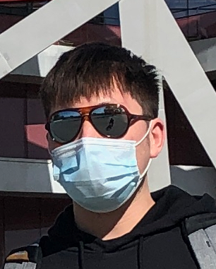

Youpeng Zhao
ypzhao96 [at] gmail [dot] com


I am broadly interested in the fields of machine learning, computer vision and data science. My current research involves AutoML and DNNs for biomedical imaging.
I obtained my M.Sc. degree from Georgia Tech in 2020, advised by Yongxin Chen. I received my B.Eng. degree from Wuhan University in 2018, advised by Xiangtao Zhuan.
Experience
- Samsung Research, Beijing, China
03/2021 - Present
Research Staff @ Vision Computing Lab
- Chinese Academy of Sciences, Beijing, China
08/2020 - 03/2021
Research Assistant @ NLPR
Advisor: Ge Yang
- Georgia Institute of Technology, Atlanta, US
03/2019 - 12/2019
Graduate Research Assistant @ Machine Learning Center
Advisor: Yongxin Chen
Projects
- CVPR 2021 NAS Competition
Train one-shot SuperNet using weight sharing strategy to generalize well on entirely new dataset; 1st place in Track 3: Unseen Data Track. - Semi-supervised Spatial-based Network for Mitochondria Segmentation
Train semi-supervised spatial-based DNNs to perform segmentation tasks for EM data and achieve state-of-the-art results; paper in progress. - Automatic Particle Detection for Cyro-Electron Tomograms
Build efficient automatic particle picking framework for protein detection, based on 3D U-Net and 3D Center-Net.
Fun Facts
- I used to play some elecctronic keyboard and won a national prize in 2008.
- My first name is Youpeng (有朋), which in Chinese, means having lots of friends :)
- My English name is Kenneth, but people often call me Ken.
- I love George Michael and Friends.
{kind=link}